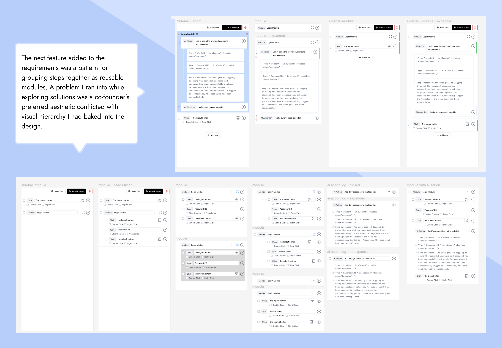

Momentic enables developers to deploy AI agents to test web apps end-to-end. No code required - just describe user flows using natural language.This is a developer tool that uses AI to efficiently interact with and test an application like a real world user would.
When a user’s test fails, it shows exactly what happened in the browser so the problem can be fixed. No access to a codebase is required.
Application testing is most commonly conducted using test scripts, which are unreliable and a burden to maintain as an application grows. By implementing a language learning model, Momentic is able to reactively adapt to the application and only surface actual issues.
I am currently working closely with the co-founders to design the core user experience from the ground up. It began with initial exploration sketches that were then built out into a full Figma component library. The test builder is the core flow of the Momentic user experience.
The test builder is the core flow of the Momentic user experience.
My task here is to create a tool that empowers users to quickly and effectively create and run automated QA tests on their products without any coding or access to a codebase.
I am currently working closely with the co-founders to design the core user experience from the ground up. It began with initial exploration sketches that were then built out into a full Figma component library. The test builder is the core flow of the Momentic user experience.
The test builder is the core flow of the Momentic user experience.
My task here is to create a tool that empowers users to quickly and effectively create and run automated QA tests on their products without any coding or access to a codebase.
The test builder experience revolves around creating, ordering, and editing building blocks. The blocks consist of a combination of AI steps, AI assertions, modules, preset actions, and other nodes to allow a user to create a wide variety of tests.
As the product has grown from an initial concept to having paying customers, the design and list of features has continued to rapidly evolve. The evolution and thought process of these building blocks is presented below.
lower level actions generated as a result of AI prompts, granular actions provided me with an opportunity to add an element of scalability to the design which would allow for more natural evolution as more features were added farther down the roadmap.
The setup section of the test creation tool acts similar to a pre-flight check- users can make sure the baseline for their test is ready before the actual test begins.
Selecting and saving chunks of test blocks into modules enabled users to save and re-use particular portions of tests. This means users can more efficiently iterate and run new versions of tests based on elements of previous ones.

The main user scenario for this tool is creating and running tests. Below are some of the core screens from this flow.
Besides designing the core UX, I also was responsible for creating the logo and branding, along with the design of the landing page for the company.
Momentic and this project are very much a work in progress.
For updates check out https://momentic.ai